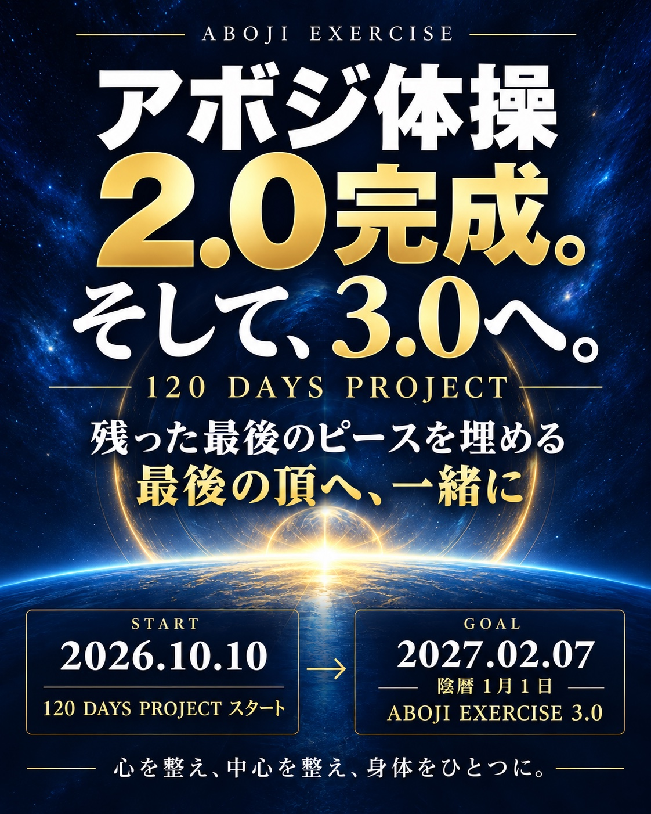

2.0完成。そして、3.0へ。
120日チャレンジが始まります。
120 DAYS PROJECT · 2026.10.10 START
10月10日（土）から、新たな120日間の挑戦がスタートします。完成したアボジ体操2.0の動画を中心に、皆さんと学習と実践を重ねていきます。
残った最後のピースを埋める。
毎朝の実践と探究から見えてきた、3.0への糸口。これまで培ってきた身体の感覚や気づきを深め、体操の質をさらに高めるポイントを、40日ごとの節目にお伝えしていきます。
- 10月10日（土）｜チャレンジ開始2.0の動画を見ながら、一つひとつの動きを実践。
- 10月11日（日）｜最初のポイント解説3.0につながる学びの第一歩をお伝えします。
- その後、40日ごとの節目に日曜日の解説で、新たなポイントを順次共有します。詳しい日程は公式LINEでお知らせします。
- 2027年2月7日｜プロジェクトの目標日120日間の学びを、次の実践へ。
質問・感想も、お気軽に。
毎週日曜日の解説と、日曜夜9時30分からの「寝る前体操」で、質問や感想に随時お答えします。
公式LINEで参加・最新情報を見る毎週日曜日の解説と、日曜夜9時30分からの「寝る前体操」で、質問や感想に随時お答えします。
